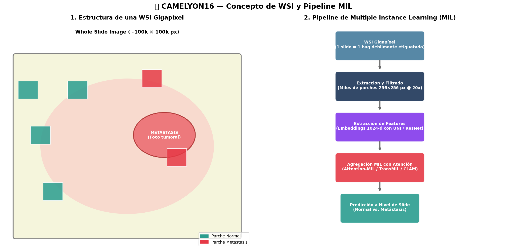

CAMELYON16: 3.17 Millones de Coordenadas, Mapas 2D Reales y 25,235 Máscaras
El Gold Standard mundial de Ilse (2018), CLAM (2021), TransMIL (2021) y Confiabilidad MIL (2025): cómo pasamos de ~700 GB intratables a bolsas de 123 a 35,766 instancias en 10.77 GB locales (+1.50 GB UNI embeddings).
+ 130 Test Oficial (3.17M ptos)
(Mediana 6,813 / Media 7,963)
Parche 256×256 + Máscara px
+ normal_map.xlsx (160)
¿Por qué CAMELYON16 es la Prueba Más Dura Para Todo Modelo MIL?
Imagina revisar un edificio gigante de hasta 35,766 piezas (tumor_092.tif) donde el 95%–99% de las habitaciones son normales y apenas unas cuantas esconden micrometástasis.
• Si sacas el promedio simple de todas las piezas (Mean Pooling), ese 5% tumoral desaparece bajo el ruido del 95% normal.
• ¡En TransMIL Tabla 1 (2021), Mean-pooling obtiene apenas 0.4647 AUC en CAMELYON16 (peor que lanzar una moneda!), mientras Gated Attention / CLAM / TransMIL escalan a 0.876–0.931 (o 0.953 en CLAM)!
Las WSIs crudas pesan ~700 GB. Gracias al enfoque de Espacio de Características (Reunión 08 Oct), usando los embeddings UNI (1.50 GB) sobre nuestras 399 coordenadas locales entrenamos el agregador MIL en segundos en lugar de días!
| Cohorte Auditada en Disco | N WSIs | Total Parches | Min–Max / WSI |
|---|---|---|---|
| Normal Train | 159 | 1,126,118 | 123 – 26,297 |
| Tumor Train | 110 | 1,015,190 | 1,723 – 35,766 |
| Test Oficial | 130 | 1,035,959 | 968 – 32,233 |
| TOTAL REPOSITORY | 399 | 3,177,267 | Mediana 6,813 |
normal_map.xlsx (Normal_086 ausente de coords locales). Todas las cifras reales en camelyon16_coords_por_wsi.xlsx.
Antes vs Después: Coordenadas Invertidas (`nivel=17`) y 10.68 GB Ocultos
• Antes: coords[:, 0] (level=17 constante), además fusionaba Test (130) dentro de Normal e imprimía texto roto literal '%,.0f'!
• Corregido: coords[:, 1:3] reconstruye la morfología real de Normal_076 (26,297 parches) y tumor_092 (35,766 parches) + separa los 3 cohortes reales (159 / 110 / 130).
Indexamos por fin patches/data/ en camelyon16_patches_inventario.xlsx:
• classifier/train: 10,997 (4,140 Norm / 6,857 Tum)
• classifier/val: 1,647 (493 / 1,154) • test L3: 2,585 (100% Tum) • unet: 10,006 (2,445 / 7,561).
• Además corregimos la tarjeta de mínimo: era 123 (Normal_067 aprox/mínimo real) y no 624.

Normal_076 [X: 2–215, Y: 21–484] vs tumor_092 [X: 22–477, Y: 12–193]25,235 Diccionarios {'image', 'mask'} y Distribución de Las 399 Bolsas


K oscila 290× entre min=123 y max=35,766Del Porte de 700 GB al Entrenamiento Local en Segundos (UNI / iBOT)

camelyon16_pipeline_mil)[K, 1024] → ABMIL / CLAM / TransMILotsu, closing y métricas Dice / IoU se reutilizan aquí para validar la segmentación tisular y los mapas \(\alpha_k\)!
Simulador: Selector de WSIs Reales & Confiabilidad Espacial (PLOS One 2025)
Benchmark Exacto en CAMELYON16 Según Papers del Repositorio
| Paper / Arquitectura | Extractor & Agregación | AUC en CAMELYON16 | Confiabilidad Espacial (PLOS 2025) | Aporte Clave a Tu Tesis |
|---|---|---|---|---|
| Baselines Ingénuos Mean / Max Pool (Tabla 1) |
ResNet50 bloque-3 congelado + Mean o Max fijo | Mean: 0.465–0.58 Max: 0.80–0.857 |
Max: MI=0.00, r=0.00, AUPRC=0.23 (!) |
Demuestra el peligro de medir solo AUC sin validar dónde mira el modelo. |
| ABMIL (Ilse et al., 2018) ICML • Reunión 09 Nov |
Gated Attention \(\tanh(Vh)\odot\sigma(Uh)\), complejidad lineal \(O(K)\) | 0.85–0.876 (ResNet) >0.95 con UNI! |
MI=0.12, r=0.29, AUPRC=0.59 (ADD: 0.62) |
Nuestro baseline central de Etapa 1 y 2 (lineal en tiempo y VRAM). |
| CLAM (Lu et al., 2021) Nature Biomed. Eng. |
ResNet50 bloque 3 (1024-d!) + Atención + Smooth SVM sobre Top/Bottom-B | 0.953 (C16+C17) 0.934 cohorte ext. |
MI=0.12, r=0.29, AUPRC=0.59 (ADD: 0.60) |
¡Valida truncar ResNet50 en bloque intermedio 3 y restringir clústers sin máscaras! |
| TransMIL (Shao et al., 2021) NeurIPS • Correlated MIL |
MSA con aprox. Nyström \(O(n)\) + PPEG conv 3×3/5×5/7×7 | 0.9309 (Test C16) Acc 0.8837 |
DTFD/ACMIL 2025: ACMIL MI=0.16, r=0.34 |
Rompe suposición i.i.d. entre parches vecinos + converge 2–3× más rápido. |
CAMELYON16 Une Toda la Historia Teórica de Tu Tesis
El Seminario I propuso detener la CNN en capas intermedias para capturar texturas sin fine-tuning. En CAMELYON16, Lu et al. (CLAM, Online Methods p.24) hacen exactamente eso: truncan ResNet50 tras el 3er bloque residual (1024 dims) porque las capas profundas pierden detalle celular!
El informe del 08 de Octubre demostró que >8,000 parches colapsan 24 GB de VRAM en entrenamiento end-to-end. Aquí medimos bolsas reales hasta 35,766 parches, probando empíricamente la necesidad obligatoria del flujo offline de 2 etapas.
Justificó por qué la compuerta sigmoide silencia el ruido manteniendo costo lineal \(O(K)\). En CAMELYON16 el tumor cubre <10% de la WSI; la compuerta apaga las decenas de miles de parches linfáticos sanos que hunden a Mean Pooling.
Con nuestros 111 XMLs ASAP + 25,235 .npy con máscara más el código Dice/IoU de Procesamiento de Imágenes, no solo optimizaremos ROC-AUC global, sino dónde mira realmente la red (IoU / AUPRC)!
Siguientes Pasos Concretos en CAMELYON16 (Con +1.50 GB UNI)
- Adquisición Ultra-Ligera: Bajar embeddings UNI (1.50 GB) emparejados con nuestras 399 carpetas de coordenadas reales.
- Benchmark de Clasificación (130 Test WSIs): Evaluar Mean-Pool vs Max-Pool vs Gated ABMIL (Ilse) vs CLAM-SB vs TransMIL (Nyström + PPEG).
- Auditoría de Confiabilidad Espacial: Proyectar los pesos \(\alpha_k\) sobre los 111 XMLs y validar correspondencia contra los 25,235 parches .npy usando Dice/IoU y AUPRC (siguiendo a Keshvarikhojasteh 2025).